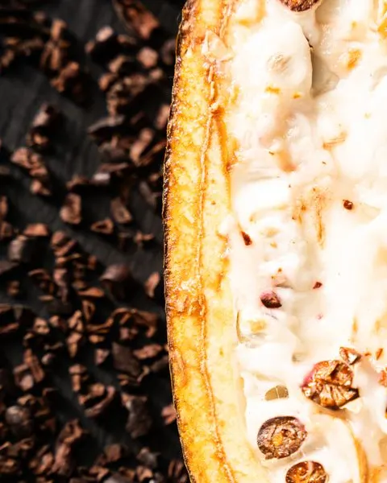
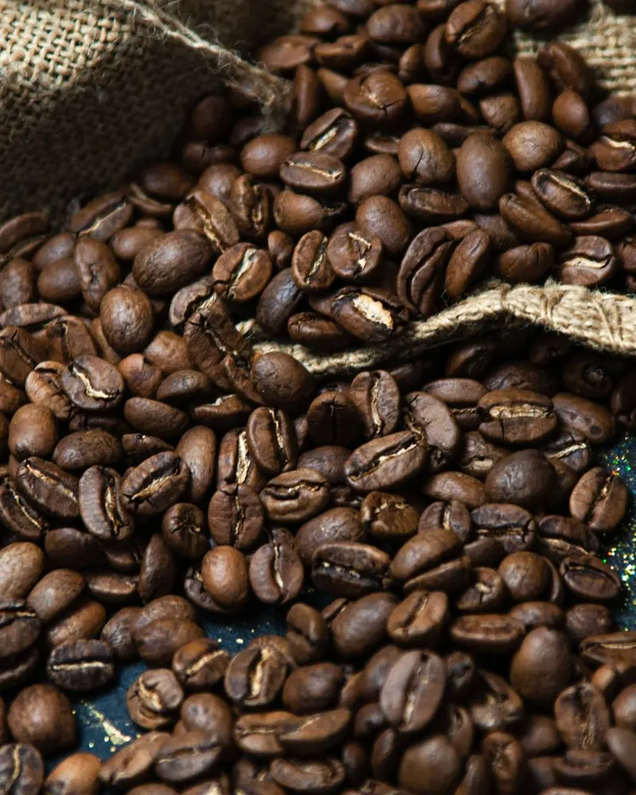
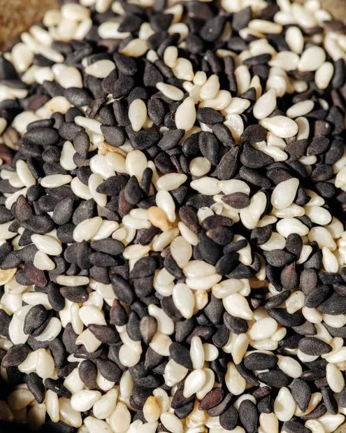
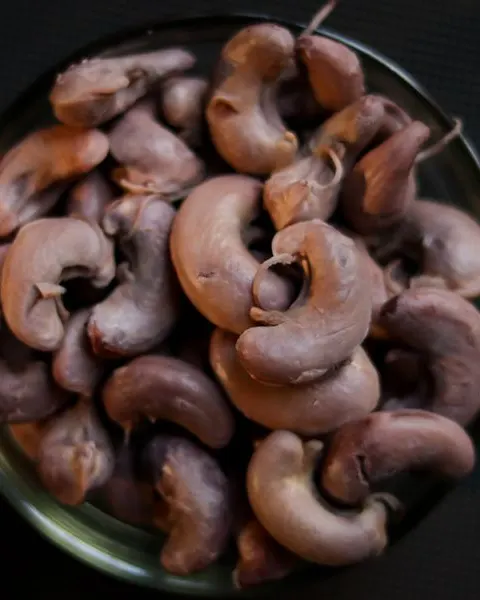
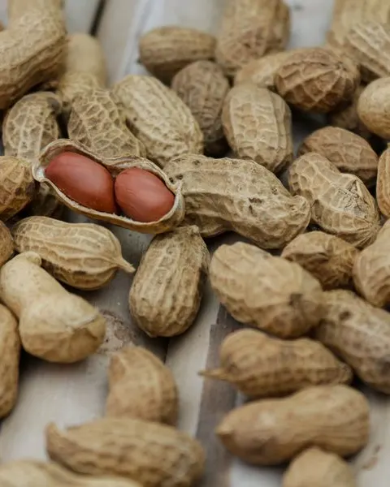
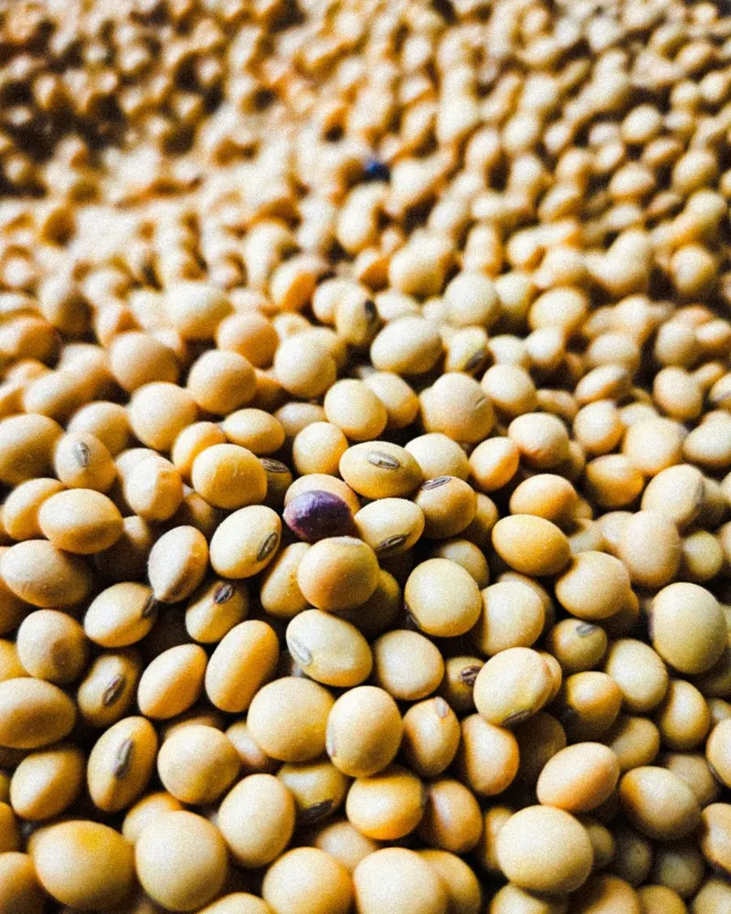
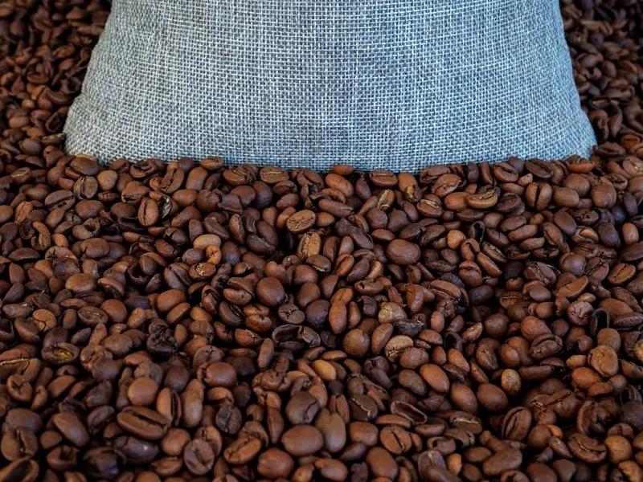
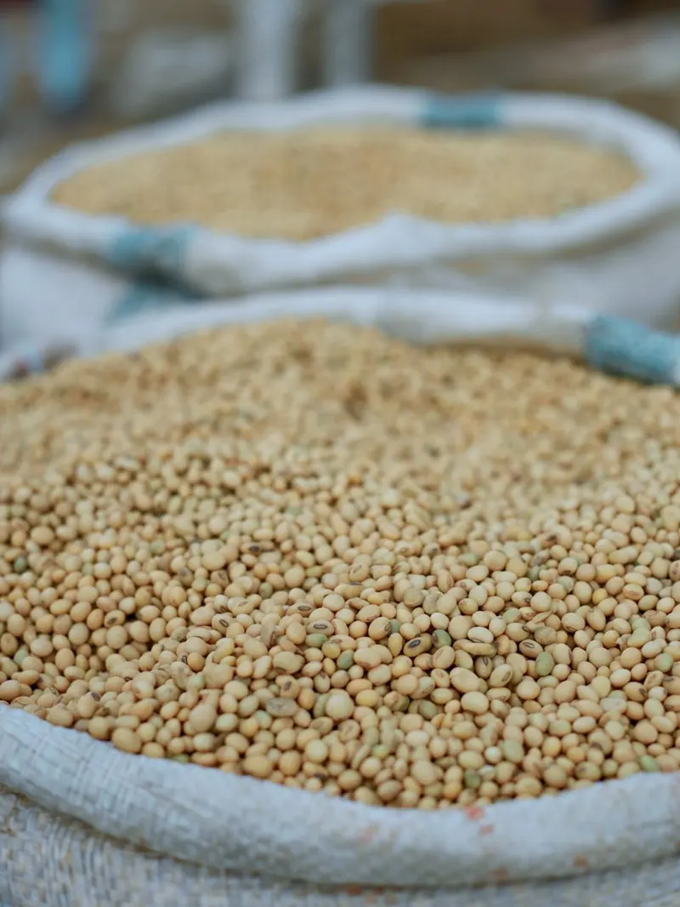

Products
Six flagship crops, one standard
Origin and grade lines are as listed on the business's existing site.

01Cocoa
The heart of fine chocolate
Sun-fermented, fully-dried cocoa beans with a deep, complex aroma. Sorted for uniform bean count and low defect rate, ready for premium chocolate and cocoa processing.
- Origin
- West Africa
- Grade
- Grade I · Fair Fermented

02Coffee
Altitude-grown, cupping-scored
Green Arabica and Robusta lots, hand-selected and screen-graded. Every consignment is cupping-scored for consistency and shipped moisture-controlled for freshness.
- Origin
- East African Highlands
- Grade
- Screen 15+ · SCA 82

03Sesame
Purity you can measure
Cleaned white and hulled sesame seeds with 99.95% purity and high oil content. Ideal for oil pressing, tahini, and confectionery across international markets.
- Origin
- Sahel Belt
- Grade
- 99.95% Purity · 50% Oil

04Cashew
Kernels with quiet luxury
Raw cashew nuts with high, consistent nut count and low moisture. Available as raw-in-shell (RCN) or processed white wholes for retail and industrial buyers.
- Origin
- Coastal Plantations
- Grade
- W320 · 48 lbs/bag

05Groundnuts
Bold-roast confidence
Aflatoxin-tested groundnuts with uniform kernel size and rich flavour. Suited for oil extraction, roasting, and snack manufacturing at scale.
- Origin
- Savannah Region
- Grade
- Bold 50/60 · Aflatoxin < 4ppb

06Soybeans
Protein for the world
Non-GMO soybeans with high protein content and clean sorting. A dependable feedstock for oil, meal, and plant-protein production year-round.
- Origin
- Central Belt
- Grade
- Non-GMO · 38% Protein
Representative stock photos, not the business's own. Credits in CREDITS.md.
Global reach
From origin farms to ports on every continent
- 42+Destination countries
- 120k MTShipped annually
- 99.4%On-spec deliveries
Figures as stated on the business's existing site; not independently verified.
Ports we ship to
- Rotterdam
- Hamburg
- Shanghai
- Mumbai
- Jebel Ali
- Ho Chi Minh City
- New York
- Istanbul
Process
A supply chain engineered for trust
- 01
Origin sourcing
Direct relationships with cooperatives and farms let us select the right crop, region, and season for your requirement.
- 02
Quality control
Each lot is sampled and lab-tested for moisture, purity, defect rate, and contaminants against your target grade.
- 03
Documentation
Phytosanitary certificates, certificates of origin, and full traceability records are prepared before loading.
- 04
Logistics & shipping
Consolidated, containerised, and shipped with real-time updates from warehouse to destination port.
Gallery
From the sack


Representative stock photos, not Cameroon Agro Trading LTD or its produce.
About
A grower's eye, an exporter's discipline
Cameroon Agro Trading LTD is an agricultural commodity supplier built on long-standing relationships with growers and a refusal to compromise on quality. We bridge the distance between smallholder farms and international buyers with transparency at every step.
Trading premium crops since 1998
- Farm-level traceability on every consignment
- Independent lab testing and pre-shipment inspection
- Flexible volumes from a single container to bulk vessel
- Dedicated account manager for each buyer
Contact
Tell us what you need, we'll respond within one business day
Share your target commodity, grade, and volume. The trade desk will come back with availability and shipping terms.
Trade desk
One World Trade Plaza, NYNo opening hours are listed on the business's existing site.
Cameroon Agro Trading LTD
One World Trade Plaza, NYRequest a quote.
Commodity, grade, volume: send it to the trade desk.